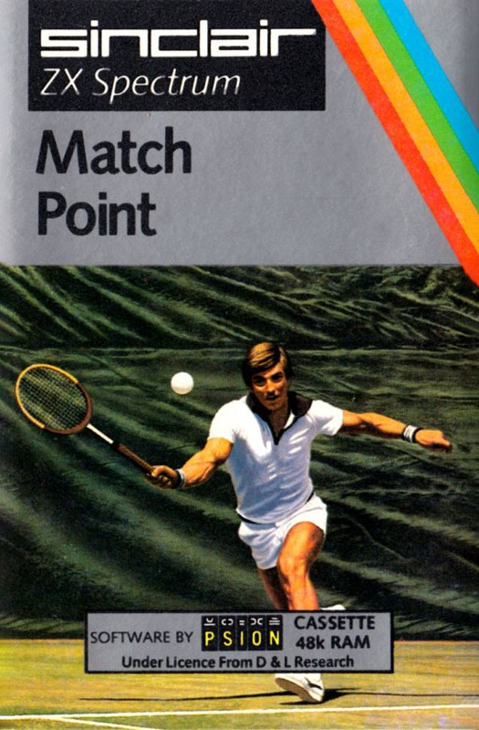
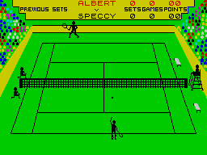

Match Point


{kind=link}

| Publisher: | Psion/Sinclair |
| Price: | £7.95 |
| Year: | 1984 |
| Source: | CRASH, Issue 8 |

So many of the better games this summer seem to be sports simulations of the active kind rather than the strategic armchair sort, of which type Match Point is a supreme example. We’ve come to expect rather special programs from Psion and Match Point doesn’t disappoint. It points up the advances in Spectrum programming which underlines to some extent comments made by Crystal/Design Design programmer Simon Brattel in this issue about the versatility of the video display of the Spectrum encouraging programmers to write better and better looking programs. Match Point would have been almost inconceivable this time last year, so too would Database’s Micro Olympics.
There is an arcade version of tennis which does look good, but apart from the coloured sprites of the players there is little that Psion’s Match Point can’t do to match the arcade original, and in fact the perspective view is more realistic.

of the sun and serve an ace
The game is for one player against the computer or two players against each other, although the flexible front end allows you to enter not only your own name but also that of the computer so if you want to you can have the thrill of beating McEnroe (or being beaten by him of course!) or Navratilova if you prefer.
The screen display, prominently green naturally, shows the tennis court from the ‘commentators’ box’ position, looking straight along the centre of the court from one end. At the ‘back’ is the scoreboard, and to either side are spectators who convincingly turn their heads to follow the movement of the ball. The two players are fully animated and the movement of the ball results in its shadow being seen on the grass to help you judge its position. Further detail is added by the ball boy who runs in to collect net serves.
Games and scoring are quite authentic for lawn tennis, a match being played over three or five sets with the winner being the player to win either 2 or 3 sets respectively. Six games make up a set, the winner having a clear lead of 2 games, although a tie-break comes in automatically should the score reach six games each, except in the final set when play continues until one player achieves a two game lead. As you can see, stamina is required. Game scoring follows full rules including deuce and advantage. Players change ends of court automatically at the correct moment and service follows the accepted pattern.
The game can be controlled by keys or joysticks with fire being used to serve and change racket swing. The movement, speed and position of the ball can be determined by type of swing, where the ball hits the racket and at what moment during the swing the contact is made. All this adds up to an extremely realistic program.
CRITICISM
‘At last someone has had the guts to reproduce the game of tennis on the Spectrum, and they have made an exceptionally good job of it. Every detail has been really polished even down to the spectators’ heads moving left and right with the ball. Ball boys do a great job as they run realistically across the court. This must be the ultimate yet in sports simulation. A great feat of programming. Great!’
‘Match Point is an interactive tennis game where the players move about and hit the ball very well. A point against the game is that the automatic change from forehand to backhand and vice versa can cause more problems than it’s worth. I would prefer to be in complete control. Forced changeovers can cause problems! Generally, though, this is a very playable and addictive game. It is certainly a vast leap over the very first tennis games. Remember them — the first TV arcade games with two flat bats and a ball in black and white?’
‘If you become worn out — and you will — then you can sit back and watch the computer play an exhibition match played by middle, senior or top seeded tennis stars until you feel well enough to take the court again. The colouring of the graphics is sensible rather than exciting, black figures on the green background, but the animation and speed with which they move more than makes up for any disappointment caused by Spectrum colour problems. Match Point calls for considerable skill in placing the ball where you want just as in the real thing, and I can’t imagine anyone becoming bored with it very quickly. Addictive in fact.’
COMMENTS
| Control keys: | Selected: (2 players) S or J/D or K move left/right, 1 or 0/Q or O move up/down, CAPS/SPACE swing racket. But all keys may be user defined |
| Joystick: | ZX 2, Kempston |
| Keyboard play: | Responsive |
| Use of colour: | Sensibly used without attribute problems |
| Graphics: | Very impressive, smooth and fast with a deal of realism |
| Sound: | Not much at all, but hardly affects play |
| Skill levels: | You may play quarter, semi- or finals, entering at any level, each increasing in speed and computer skill |
| Originality: | Highly original from the programming point of view to have achieved the level of this game |
| General rating: | Excellent and addictive to play, so much so that its rather high price seems well justified. |
| Use of computer: | 87% |
| Graphics: | 92% |
| Playability: | 90% |
| Getting started: | 87% |
| Addictive qualities: | 92% |
| Value for money: | 86% |
| Overall: | 89% |